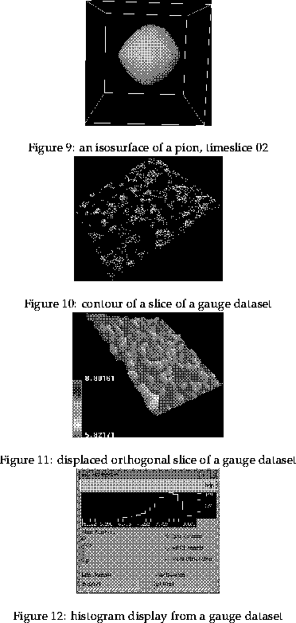
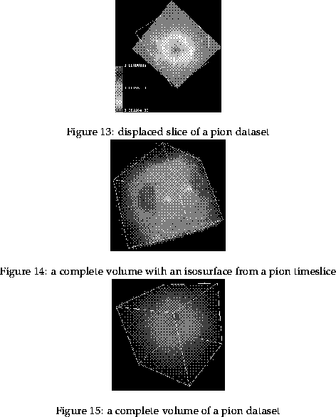

Next: 9 Glossary
Up: Manual to aid the
Previous: 7 making movies
Having read this manual and used the facilities present the user should
be able to create mesons and view these and the gauge fixing data. When
viewing these there are
certain types of images the user should be able to obtain. This section
contains examples of most of these types of images (this may also aid
the user in deciding which maps to use):

